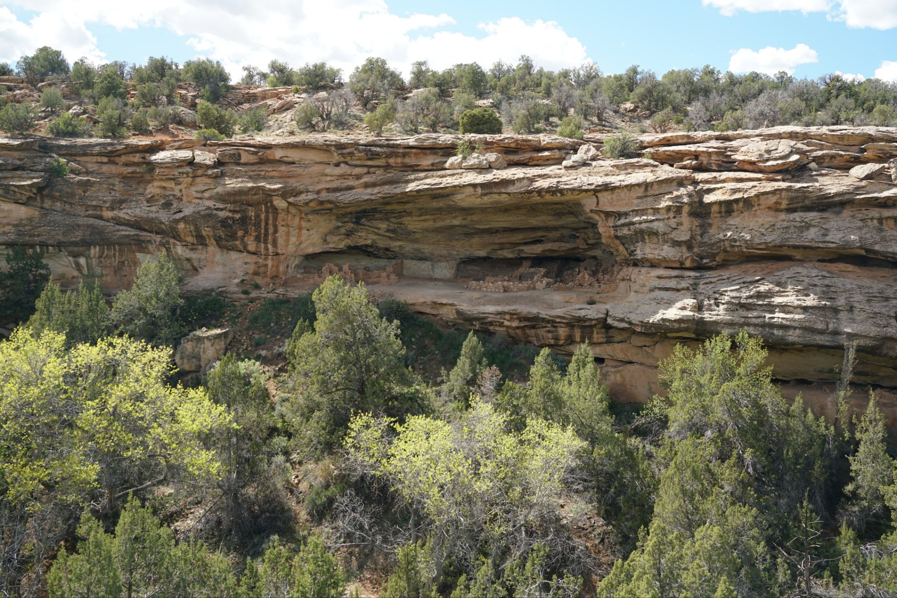
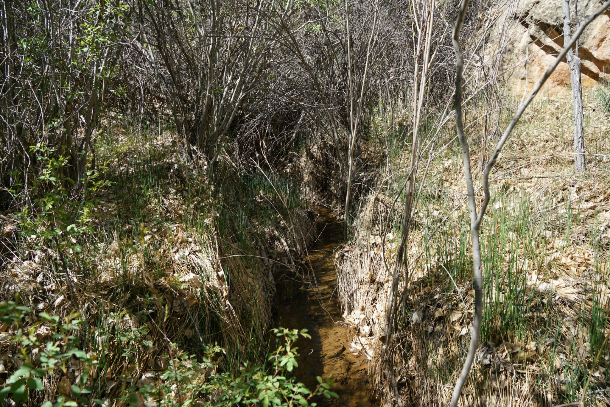
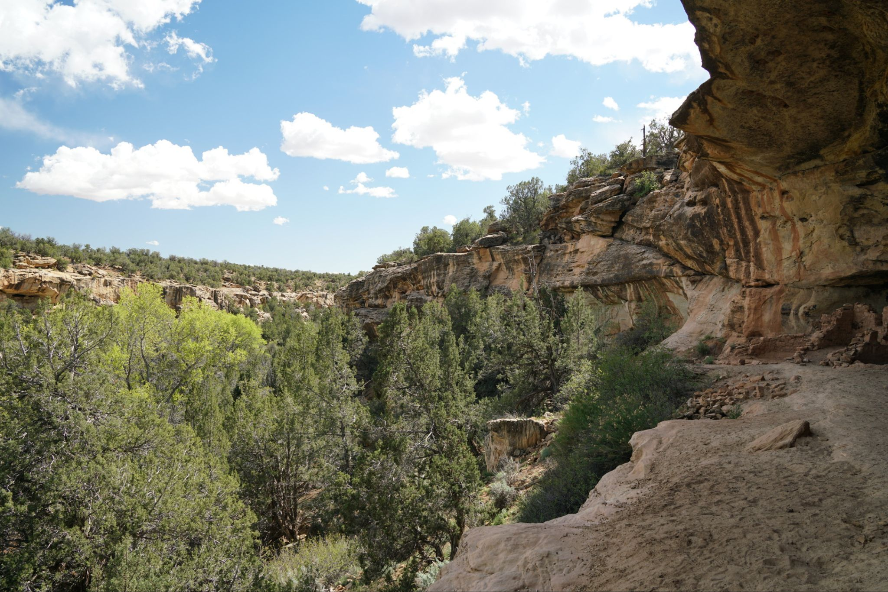
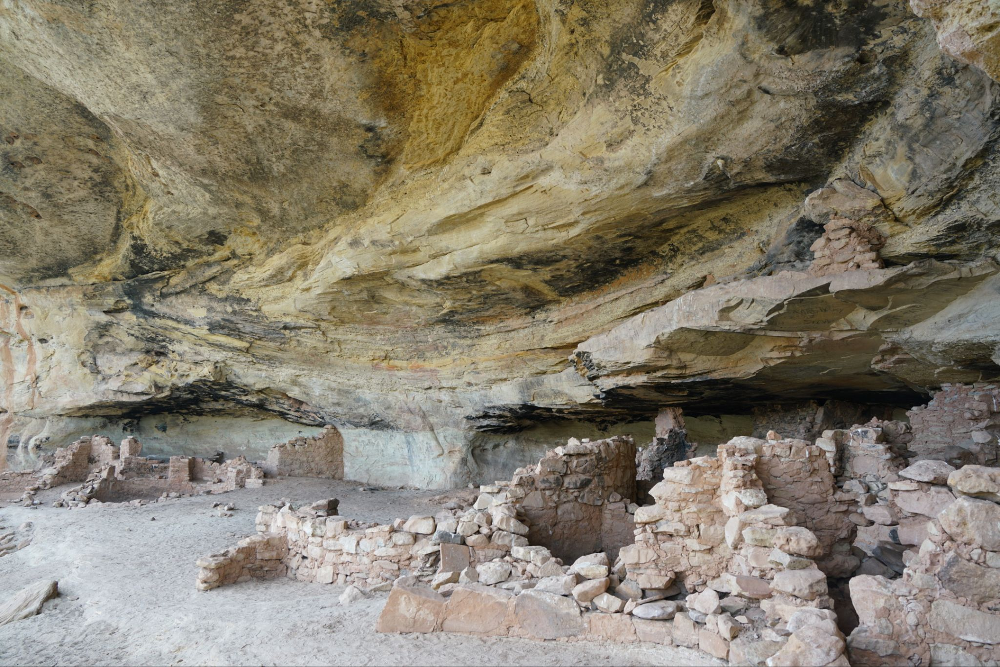
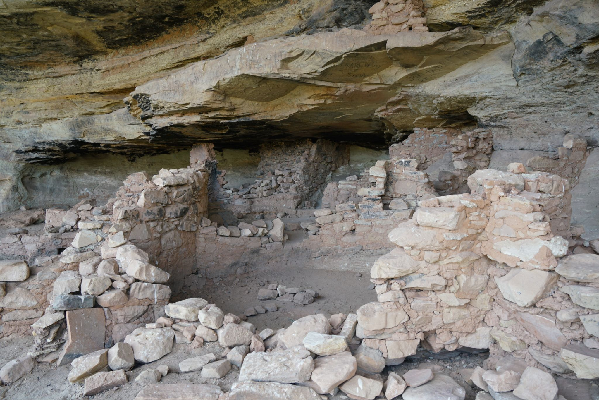
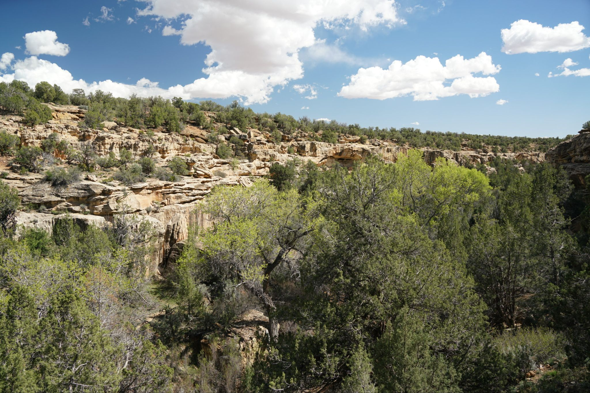

4 /7/202 6 - Five Kiva Pueblo
It’s a very short hike under 1 mile round trip to see these dwellings. The trailhead is just outside the town of Blanding and you can spot the dwellings from there, but getting to them involves walking down into the canyon then up into the alcove. The alcove has vast amounts of graffiti unfortunately, probably due to the proximity to town and ease of access.





